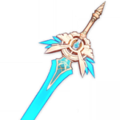

Беннет

Основной навык Беннета представляет собой простую атаку из нескольких ударов.
Билд "Поддержка Пиро"
Оружие
Небесная гордость
Увеличивает шанс крита на 4/5/6/7/8%. При использовании Элементального зрения увеличивает скорость передвижения на 10%, увеличивает скорость атаки на 10%, и увеличивает урон обычных и заряженных атак на 20/25/30/35/40% на 12 секунд.
или
Вспышка во тьме

Увеличивает урон, наносимый владельцем оружия, на 12/15/18/21/24%. Получение урона отключает этот эффект на 5 секунд.
Артефакты
Заблудший в метели

(2) +20% к урону от взрыва стихии
(4) Использование взрыва стихии увеличивает атаку всех членов группы на 20% на 12 секунд. Этот эффект не суммируется.
Рекомендуемые характеристики артефактов
Основные

Здоровье% / Восстановление энергии

Здоровье%

Бонус к исцелению
Второстепенные
- 1.Восстановление энергии
- 2.Здоровье%
- 3.Мастерство стихий
- 4.Здоровье